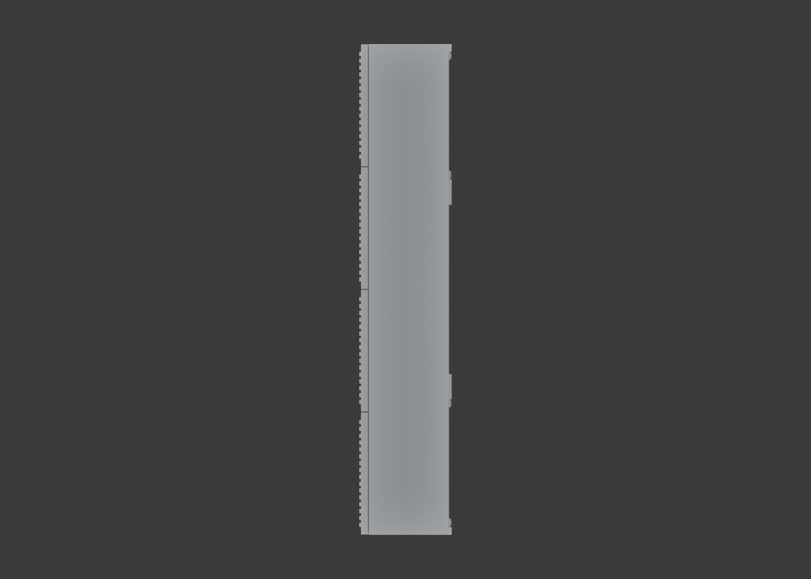
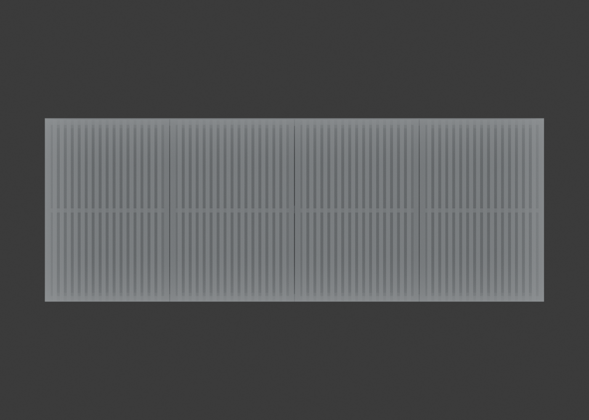
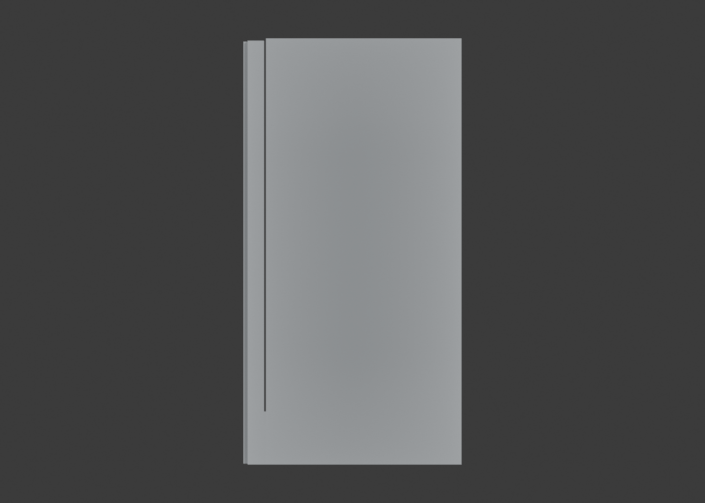
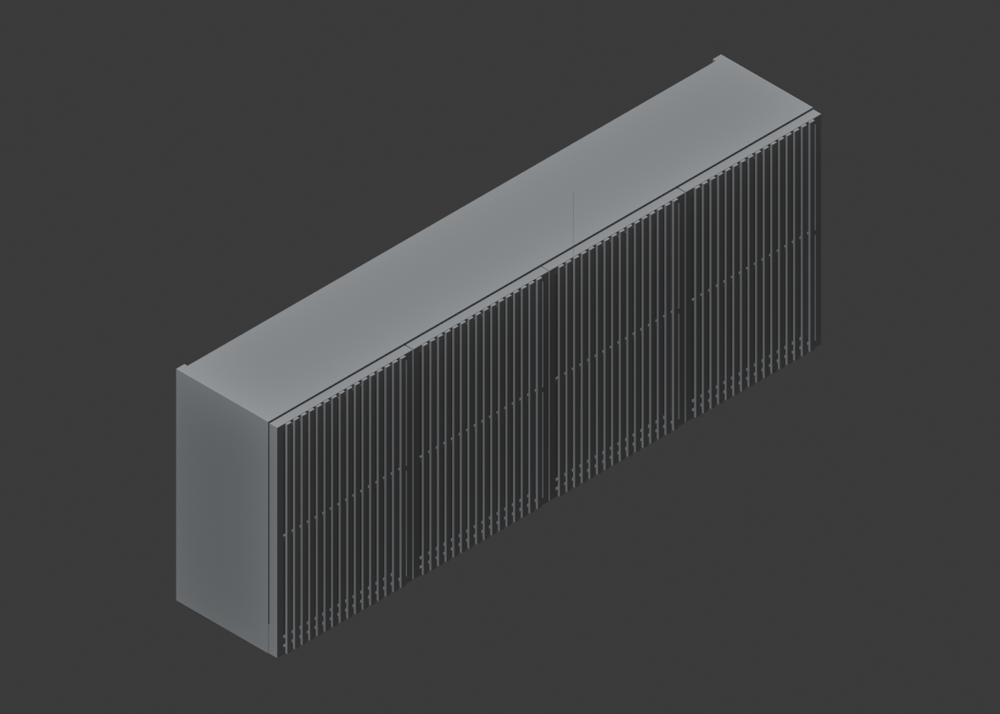
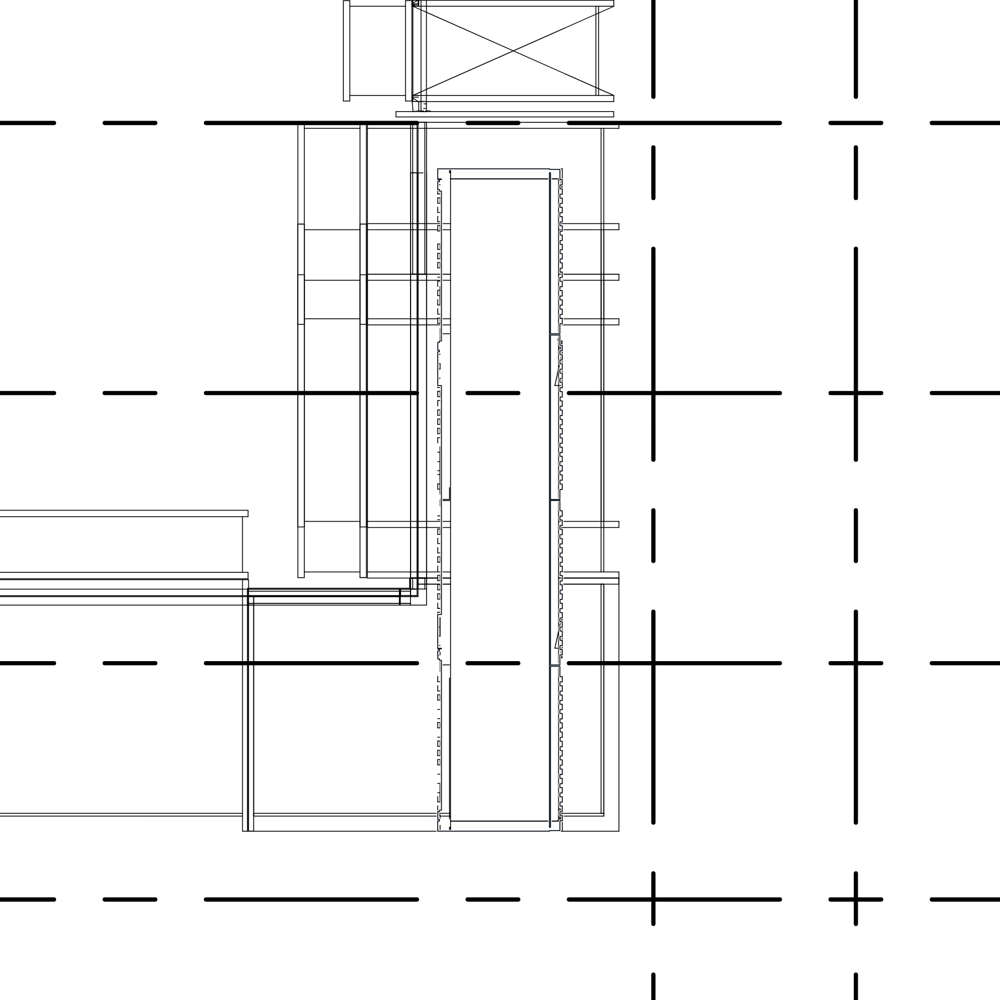
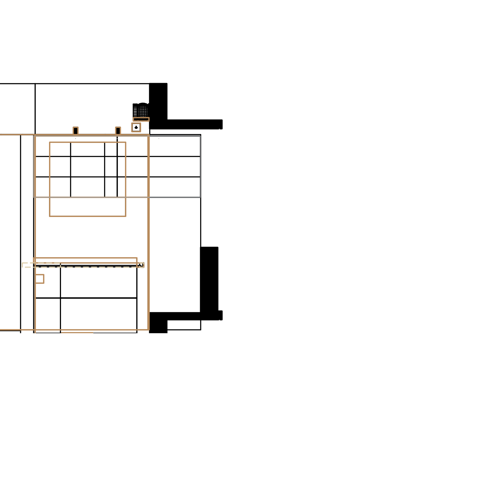
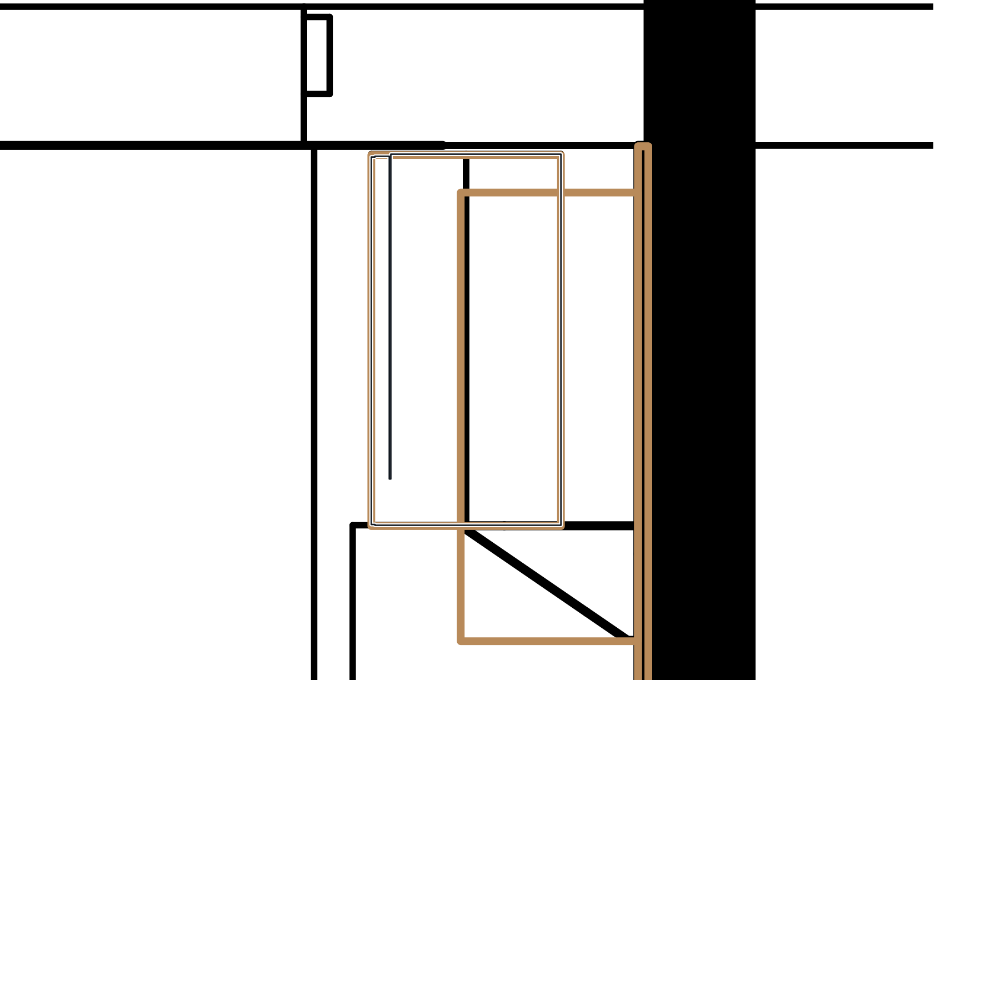

Plan

Grey = actual IFC Body; black = current 基于原始高模几何生成的简化图纸表达; solid blue = mechanically selected native DWG linework; dashed blue = explicitly labelled native-DWG solid/dimension envelope where no dedicated 2D view exists.
The native Plan paths are selected from the exact 1962 x 370 mm group. The DWG does not provide a dedicated closed Front/Side path set for the selected project pose; those SVG views therefore use dashed dimension envelopes from the same DWG and say so explicitly. Catalogue depth 331 mm is internal; 370 mm is the DWG overall depth.










Formal IFC SHA-256: 7a50b87e8f48a7c2bfbaa9f1dabdfca7155fa684b2325c66aa1ae15c8ab0a25c. No derived or authoritative IFC was written.